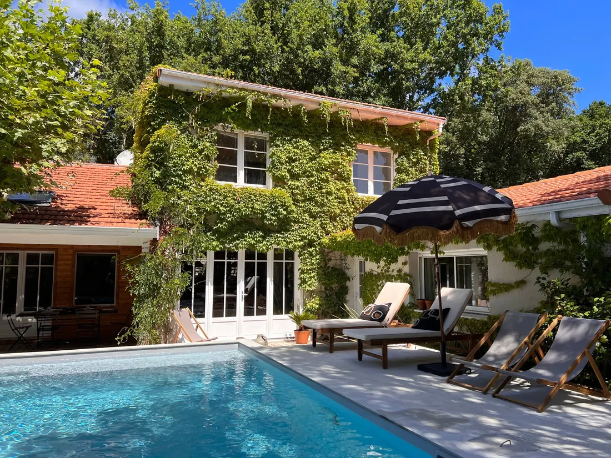

Lacanau · Le Moutchic · Gironde, côte atlantique
La Maison du Lac
Maison de famille avec piscine, au bord du lac de Lacanau. Une maison de famille couverte de vigne vierge, ouverte sur le jardin et la piscine, à cinquante mètres du lac de Lacanau et à dix minutes de l'océan.
Maison entière · 12 voyageurs · 6 chambres · 7 lits · 2 salles de bain · note 5 sur 5 (13 avis, hôte Superhost).

Voir les disponibilités et réserver en direct (−10 %) · Réserver sur Airbnb
Les points forts
- Piscine privée : Extérieure, disponible d'avril à octobre.
- Le lac à 50 mètres : Au Moutchic, avec quelques restaurants à 3 minutes à pied au bord de l'eau.
- L'océan à 10 minutes : En voiture, ou 20 minutes à vélo.
- Calme, sans vis-à-vis : Les pièces de vie donnent sur le jardin et la piscine.
La maison
Grande maison au bord du lac, spacieuse et confortable.
Le logement
Notre maison est une maison de famille. Elle est un vrai havre de paix ! Nous y passons des moments merveilleux et de pur bonheur.
Calme, et sans vis-à-vis.
Les pièces de vie donnent sur le jardin et la piscine. 2 chambres et une salle de bain sont de plain-pied.
La cuisine est entièrement équipée, et est ouverte sur l'espace de vie.
Les 4 autres chambres sont en étage. La maison a également 4 WC, pratique lorsque l'on est nombreux.
Accès des voyageurs
Toute la maison est accessible aux voyageurs.
Vous pouvez garer 1 voiture dans un espace dédié, et à 20 m, vous avez des stationnements gratuits.
Les chambres
- Chambre 1 : 1 lit king size
- Chambre 2 : 1 lit double
- Chambre 3 : 1 lit double
- Chambre 4 : 1 lit double
- Chambre 5 : 1 lit double et 1 lit simple
- Chambre 6 : 1 lit double
Équipements
Extérieur
- Piscine extérieure privée (d'avril à octobre)
- Jardin, vue sur le jardin
- Patio privé
- Mobilier d'extérieur
- Espace repas en plein air
- Chaises longues
Emplacement
- Au bord de l'eau, juste à côté d'un plan d'eau
- Accès au lac par un sentier ou un quai
- Accès à une plage à proximité
Cuisine et salle à manger
- Cuisine entièrement équipée, ouverte sur l'espace de vie
- Réfrigérateur, mini réfrigérateur et congélateur
- Lave-vaisselle
- Four en acier inoxydable et four à micro-ondes
- Plaques de cuisson
- Cafetière filtre et machine à expresso
- Bouilloire électrique, grille-pain
- Verres à vin, vaisselle et couverts
- Tout le nécessaire pour cuisiner (casseroles, poêles, huile, sel, poivre)
- Table à manger
Chambres et linge
- Linge de lit en coton
- Serviettes, draps, savon et papier toilette
- Stores ou rideaux occultants
- Dressing et placards
- Cintres, fer à repasser, étendoir à linge
- Lave-linge
Salles de bain
- Baignoire
- Sèche-cheveux
- Shampoing, gel douche, savon
- Eau chaude
- 4 WC dans la maison
Vivre et travailler
- Wifi et connexion Ethernet
- Espace de travail dédié
- Télévision
- Système audio Bluetooth
- Livres et jeux de société
- Chauffage central
Pratique
- 1 place de stationnement privée, gratuite
- Stationnement gratuit dans la rue, à 20 m
- Dépôt de bagages possible
Non disponible : Climatisation, Sèche-linge, Détecteur de monoxyde de carbone.
Le quartier et les environs
Nous sommes au Moutchic, la maison est à 50 m du lac, 10 min en voiture de l'océan (ou 20 min à vélo), 3 min en voiture du golf et 7 min en voiture du supermarché. Quelques restaurants sont à 3 min à pied au bord du lac. Lacanau ville et Lacanau-Océan sont à 10 min en voiture.
Sur la côte médocaine, Lacanau réunit deux mondes : un grand lac d'eau douce bordé de pins, idéal pour les enfants, la voile et le paddle, et l'océan, ses plages de sable fin et ses vagues réputées des surfeurs. La maison est au Moutchic, côté lac, à dix minutes de la plage.
- Le lac de Lacanau (50 m à pied) : Baignade en eau calme, voile, paddle, kayak, pique-niques à l'ombre des pins. Quelques restaurants vous attendent au bord de l'eau, à 3 minutes à pied de la maison.
- Les plages de Lacanau-Océan (10 min en voiture) : Des kilomètres de sable face à l'Atlantique, des plages surveillées en saison et l'un des spots de surf les plus connus de la côte. Les couchers de soleil y sont spectaculaires.
- Les pistes cyclables (À proximité) : Un réseau de pistes cyclables traverse la forêt de pins entre le lac et l'océan : comptez une vingtaine de minutes à vélo jusqu'à la plage.
- Le golf (3 min en voiture) : Pour les amateurs, un parcours au milieu des pins, tout près de la maison.
- Les grands vins du Médoc (Environ 45 min) : Les châteaux de la route des vins (Margaux, Pauillac, Saint-Julien…) se visitent sur rendez-vous, pour une journée de dégustations.
- Bordeaux (Environ 1 h de route) : Et la Maison de Pierre, pour combiner océan et ville dans le même voyage.
Nos guides : Vacances en famille à Lacanau : le guide · Les plages de Lacanau en famille · Une semaine en Gironde en famille
Règlement et informations utiles
Arrivée et départ
- Arrivée à partir de 16 h
- Départ avant 10 h
Pendant le séjour
- 12 voyageurs maximum
- Pas d'animaux
- Pas de fête ni de soirée
- Non fumeur
- Calme de 23 h à 7 h
Bon à savoir
- Piscine sans clôture ni verrou : surveillance des enfants indispensable
- Lac à proximité
- La maison comprend des escaliers
- Caméras de surveillance extérieures présentes
- Détecteur de fumée installé
Avis des voyageurs
Note 5 sur 5, 13 avis.
« Nous parcourons parfois des centaines voire des milliers de kilomètres pour nous dépayser, j'ai juste fait quelques kilomètres pour me retrouver dans un havre de paix. »
« La maison est superbe, décorée avec beaucoup de goût, très confortable et spacieuse… Vous traversez la route et vous êtes au lac… »
« The house felt like a real luxurious stay and the location was perfect for both Lacanau Lake and also Lacanau Ocean. »
« L'extérieur et la piscine invitent à la détente et au farniente. Un véritable havre de paix ! »
« Un ameublement très complet et une décoration raffinée et harmonieuse… nous a permis de jouir d'un confort de vie exceptionnel. »
« The house was spotless, beautifully decorated, and had all the little touches that made it feel like home. »
« The lake is so close that it makes for a very relaxed holiday in this beautiful part of the world. »
« C'est une maison chaleureuse, décorée avec goût par les propriétaires et très fonctionnelle. Je vous la recommande les yeux fermés. »
À environ une heure de route : La Maison de Pierre, notre autre maison.